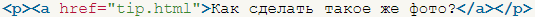
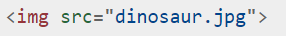
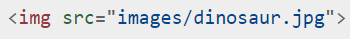
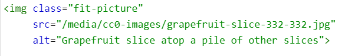
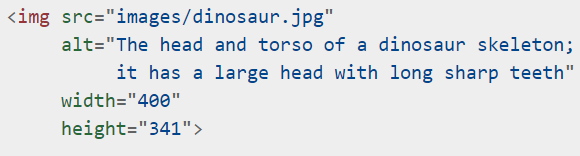
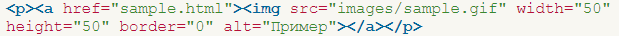

Ссылки
Каждый сайт не может обойтись без ссылок и сейчас мы об этом расскажем.
- Тег <a>
- Ссылка создается при помощи тега <a> и атрибута href , куда вставляется адрес перехода.
Ссылка может быть как на сторонний сайт , так и на другую страничку вашего сайта.

- Ссылка-якорь
- Такая ссылка используется для навигации по странице.
В место , в которое мы хотим перейти , добавляем атрибут id с названием , которое вы хотите использовать.
В теге a в атрибуте href через # указываем название id , которое мы до этого задали.
Изображения
- Тег <img>
- Тег <img> используется для подключения изображения к сайту.
При помощи атрибута src указывается расположение и название нашего изображения.


- Атрибут alt
- Атрибут alt является важным и используется для указания альтернативного текста , если картинка
не загрузится.

- Размеры изображения
- При помощи атрибута width можно задать ширину изображения, а
При помощи атрибута height высоту изображения.

- Ссылка-изображение
- Если тег <img> обернуть в тег <a> , то изображение будет работать как ссылка.
Если нажать на такое изображение , то вы перейдете на указанный в теге <a> адрес
